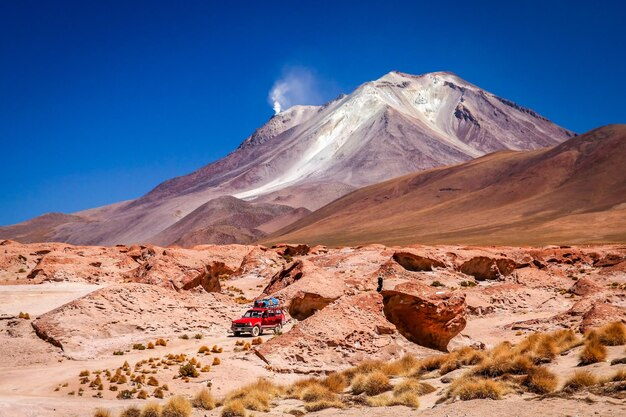

1.🏞️ Cañón del Colca

- 📍 Ubicación: Provincia de Caylloma, Arequipa.
- 🌾 Agricultura ancestral: Se pueden observar terrazas agrícolas construidas hace más de mil años por las culturas prehispánicas.
- 🦅 Fauna destacada: Es hogar del cóndor andino, una de las aves voladoras más grandes del mundo.
El Cañón del Colca es uno de los cañones más profundos del mundo, ubicado en la región de Arequipa, al sur del Perú. Tiene una profundidad aproximada de 3,400 metros, el doble que el Gran Cañón de Estados Unidos.
2.Importancia Cultural
- El cañón ha sido habitado desde tiempos preincaicos por los pueblos Collaguas y Cabanas, quienes aún conservan sus tradiciones, vestimentas y lengua.
- Existen iglesias coloniales muy bien conservadas en los pueblos de la zona.
3.Turismo y Actividades

- 🚶♂️ Trekking y senderismo por rutas naturales con vistas espectaculares
- 💦 Baños termales en La Calera (Chivay).
- 🏞️ Visitas a pueblos tradicionales como Chivay, Cabanaconde, Yanque y Maca.
4.Datos Curiosos

- 🏔️ Está rodeado por volcanes como el Hualca Hualca, el Sabancaya (activo) y el Ampato.
- 💧 El río Colca es el que atraviesa el cañón, dando forma al impresionante relieve.